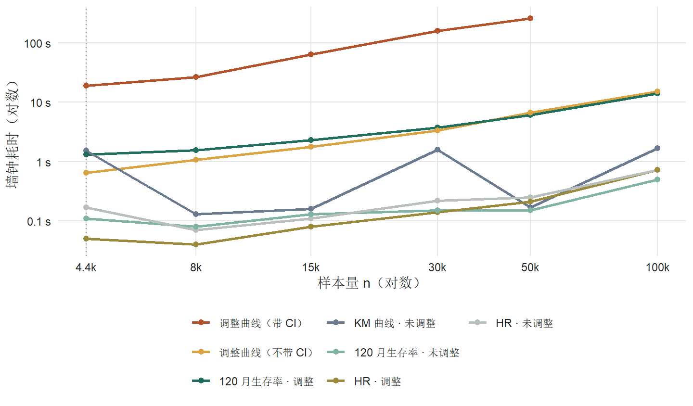
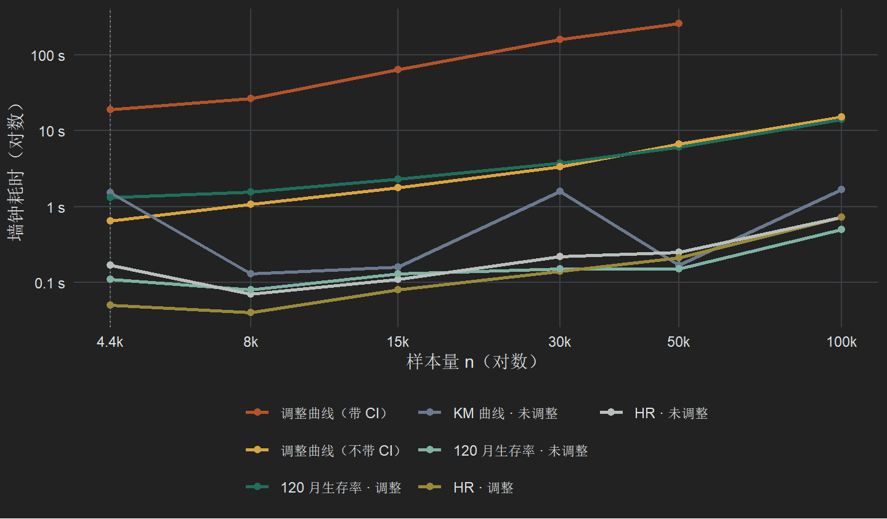
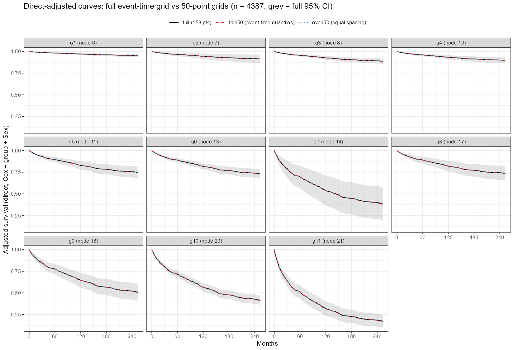

get_rpa → get_cat 各步骤在 4387 到 200000 例下的耗时和内存，两项已并入 RegR 的优化，不画置信带的评估，以及竞争风险改用 mets 后的 1 万例前后对比
评估对象是 RegR 0.1.3 中 get_rpa() 的生存路径（surv = TRUE）。传入 adj_var 后，get_rpa() 在终末节点分组上调用一次：
get_cat(dat, cat_var = "group", adj_var = adj_var, surv = TRUE,
timepoint = 120, methods_obj = c("unadj", "direct"))get_cat() 的结果由三块组成，本页分别计时：
| 组成部分 | 内部调用 | 在 RPA 图表中的位置 |
|---|---|---|
cat$obj 曲线 |
.get.obj(times = NULL) → adjustedCurves::adjustedsurv()，未调整用 "km"，调整用 "direct" |
plt_rpa_km() 左右两列、plt.sur、plt.rpa1、plt.rpa2 |
cat$UM 的 haz 表 |
.get.UM.haz() → survival::coxph() |
HR1 / HR2 |
cat$UM 的 sur 表 |
.get.UM.sur(time = 120) → .get.obj(times = 120) |
SP1 / SD1、SP2 / SD2 |
"direct" 是直接标准化（g-computation）：先拟合 Surv(time, DSS) ~ group + adj_var 的 Cox 模型，再把每个人分别放进每一组预测生存曲线，然后取平均。置信区间由 riskRegression::ate() 的影响函数给出。
get_cat() 用了 18.3 s，其中调整后的曲线占 17.4 s。HR 表在 n = 100000 时也只要 0.7 s；120 个月生存率表（含调整）在 n = 100000 时要 14 s；未调整的 KM 曲线始终不超过 1.7 s。conf_int = FALSE）时，n = 50000 也只要 6.7 s。ate() 默认计算所有组之间的两两对比。11 个组共 55 对，每对都要在约 157 个事件时间上算影响函数；adjustedCurves 实际只用到各组自己的平均生存率。改成”参照组对其余各组”的 10 对后，n = 8000 时从 40.6 s 降到 7.7 s，11 个组在所有时间点上的生存率、标准误和置信区间与默认结果完全相同。get_cat() 从 171 s 降到 14 s；保留下来的每个时间点上，曲线、标准误和置信区间与原来完全相同，HR 和生存率表一字不差。A 同样用于竞争风险的 CSC 模型；FGR 不经过 ate()，A 对它不适用，B 也没有让它变快。get_facet() 的调整曲线后来也加上了 B。见「已并入 RegR 的优化」。get_cat() 估计快 2–3 倍，因为 120 个月生存率表本身需要置信区间，C 管不到。见「方案 C：不画置信带（评估）」。get_inter() 的模型和 Fine-Gray 调整 CIF 都改由 mets 计算，调整 CIF 不再做 bootstrap。1 万例时 get_eff(surv = FALSE) 从 42 s 降到 9 s，get_cat() 从 98 s 降到 20 s，get_facet(method = "direct") 从 13 s 降到 3 s。按整月记录的数据上 sHR 变化约 1%，调整 CIF 的点估计基本不变，置信区间由 bootstrap 改为 Wald 区间。get_rpa() 只走 Cox，不受影响。见「竞争风险改用 mets：1 万例前后对比」。RegR::seer_thyroid_mtc_2026，n = 4387，DSS 事件 597 个。先在完整数据上运行 get_rpa(d, c("Age", "T_stage"), adj_var = "Sex", surv = TRUE)，得到 11 个终末节点分组；更大的 n 对这份带分组的数据按行有放回重抽样（表中标 *），因此事件时间点始终是同样的 157 个。真实的大队列通常有更多不同的事件时间，调整曲线的耗时会更高。Sex。system.time() 的墙钟时间；峰值内存取 gc(reset = TRUE) 之后 gc() 的 “max used”，只统计 R 堆内存。只有一个分组变量时，RegR 的外层不会并行，所有调用都是单进程。

| n | KM 曲线 | 调整曲线 | 其内存 | 调整曲线（不带 CI） | HR 未调整 | HR 调整 | 120 月 未调整 | 120 月 调整 |
|---|---|---|---|---|---|---|---|---|
| 4,387 | 1.53 | 18.9 | 2.1 | 0.65 | 0.17 | 0.05 | 0.11 | 1.32 |
| 8,000* | 0.13 | 26.6 | 3.1 | 1.08 | 0.07 | 0.04 | 0.08 | 1.55 |
| 15,000* | 0.16 | 64.6 | 6.6 | 1.79 | 0.11 | 0.08 | 0.13 | 2.32 |
| 30,000* | 1.58 | 159.6 | 11.2 | 3.33 | 0.22 | 0.14 | 0.15 | 3.78 |
| 50,000* | 0.17 | 262.2 | 18.6 | 6.67 | 0.25 | 0.21 | 0.15 | 6.07 |
| 100,000* | 1.69 | 未测 | — | 15.3 | 0.73 | 0.72 | 0.50 | 14.2 |
另外在 n = 4387 上测了一次完整的 get_cat()：18.3 s，其中调整曲线这一步 17.4 s。.get.obj() 在 times = NULL 时还会打印一张诊断曲线图，直接调 adjustedsurv() 的耗时（as_direct_CI，见 CSV）比经过 RegR 包装的版本少 1–10 s，主要是这部分画图和包装开销，也夹杂了计时波动。
调整曲线走的是 adjustedCurves 内部的 surv_direct()，Cox 模型在这里直接交给 riskRegression::ate()：
surv <- riskRegression::ate(event = outcome_model, treatment = variable,
data = data, estimator = "Gformula", times = times,
se = conf_int, verbose = verbose, cause = 1, ...)times = NULL 时，times 是全部事件时间（本数据 157 个）。ate() 的 allContrasts 默认取所有组的两两组合，11 个组就是 55 对，每对的风险差和风险比都要算影响函数。adjustedCurves 只读取其中的 meanRisk（各组自己的平均风险），两两对比算完就丢掉了。
adjustedsurv() 会把 ... 原样传给 ate()，所以可以从外面指定只算”参照组对其余各组”：
| allContrasts | 耗时（s） | 输出行数 | 与默认结果比较 |
|---|---|---|---|
| 默认：所有两两组合（55 对） | 40.6 | 1595 | — |
| rbind(参照组, 其余各组)（10 对） | 7.7 | 1595 | 11 组 × 全部时间点的 surv、se、CI 最大差值均为 0 |
如果只传一对（matrix(lv[1:2], nrow = 2)），耗时会降到 1 s 左右，但 ate() 只输出这两个组，其余 9 组的曲线没了，所以不能这样用。
| n | 时间网格 | 时间点 × 组 | 耗时（s） | 峰值内存（GB） | S(120) 第 1 组 |
|---|---|---|---|---|---|
| 8,000 | 全部事件时间（现在的做法） | 1595 | 35.2 | 2.9 | 0.9756 (0.9682, 0.9830) |
| 8,000 | seq(0, 240, by = 6) | 451 | 5.7 | 1.1 | 0.9756 (0.9682, 0.9830) |
| 8,000 | seq(0, 240, by = 12) | 231 | 3.4 | 0.7 | 0.9756 (0.9682, 0.9830) |
| 30,000 | 全部事件时间（现在的做法） | 1738 | 144.8 | 13.3 | 0.9728 (0.9687, 0.9770) |
| 30,000 | seq(0, 240, by = 6) | 451 | 18.1 | 3.7 | 0.9728 (0.9687, 0.9770) |
| 30,000 | seq(0, 240, by = 12) | 231 | 9.9 | 2.0 | 0.9728 (0.9687, 0.9770) |
ate() 在每个时间点上的估计互不依赖，所以只要 120 个月仍在网格里，该点的估计和置信区间就与全部事件时间时完全相同。代价是曲线从 145–158 个点降到 41 个（每 6 个月）或 21 个（每 12 个月），图形会变粗。
2026-10-02 起，下面两项已并入 RegR（版本号仍是 0.1.3，对应提交 63541f6、c71fe16、c1f6435，B 之后又在 27980d2、f30bc69 中调整，见下表）。本节的「改动前 / 改动后」都在同一台机器、同一份数据上，用 Windows R 先后装两个版本各跑一次 get_cat(..., timepoint = 120)，环境同「测试设置」。
f30bc69 之后的形式）。
| 优化 | 改了什么 | 作用范围 | 对结果的影响 |
|---|---|---|---|
| A | .get.obj() 的 direct 分支给 adjustedsurv() / adjustedcif() 传 allContrasts = rbind(参照组, 其余各组) |
Cox 调整生存曲线；竞争风险 cif_args = list(model = "CSC") 的调整 CIF；也包括走同一函数的 120 月生存率（CIF）表 |
无。每组的估计、标准误、CI 与默认的两两对比完全相同 |
| B | .get.obj() 的可选参数 max_times / keep_times（默认不限点数）。打开后，调整曲线最多保留 max_times 个时间点：按 DSS（竞争风险为结局 1）的事件时间均匀抽点，再加上 0、keep_times 和任一结局的最后一个事件时间。get_cat() 取 50 个点并保留 timepoint；get_facet() 取 50 个点并保留 timepoint 和 max_t |
get_cat() 与 get_facet() 的调整曲线，Cox 与竞争风险（CSC、FGR）都适用，因此也覆盖 get_rpa()、plt_cat1/2/3()、plt_rpa_km() |
保留的时间点上数值完全相同；点与点之间的连线最多偏离约 1 个百分点 |
不受影响的部分：
get_cat() 和 get_facet() 这两个只拿曲线画图的调用方打开它。get_facet_diff() 等调用方会从 times = NULL 的曲线对象上读取 60、120、180 个月的数值，抽点会改变这些数，所以它们仍使用全部事件时间。c71fe16）只在 get_cat() 里生成网格，经内部参数 direct_times 传给 .get.obj()。f30bc69 把网格移进 .get.obj()，改成 max_times / keep_times，并让 get_facet() 也用上。27980d2 把任一结局的最后一个事件时间加进网格：竞争风险的完整 CIF 一直画到任一结局的最后一个事件，只按结局 1 抽点时，本数据会停在 253 个月，而完整曲线到 263 个月。cat$obj$direct 自行计算中位生存时间或 RMST 时，结果现在是近似值。合计效果以 11 组 Cox、n = 30000 为例：get_cat() 原来 171 s，加上 A 后 50 s（另一轮测得 49 s），再加上 B 后 14 s，前后约快 12 倍。
| 场景 | n | 改动前（s） | 改动后（s） | 结果比较 |
|---|---|---|---|---|
| 11 组，按 Sex 调整 | 4,387 | 23.3 | 10.8 | 完全相同 |
| 11 组，按 Sex 调整 | 30,000 | 171.0 | 50.3 | 完全相同 |
| 2 组（Sex），按 Age 调整 | 4,387 | 1.4 | 1.3 | 完全相同（只有 1 对，没有可省的） |
竞争风险的 CSC 模型同样走 ate()。adjustedCurves 的 cif_direct() 在 outcome_model 是 CauseSpecificCox 时调用 ate()，其余模型（包括 FGR）改走 cif_g_comp()。所以 A 只加在 CSC 上，FGR 不传这个参数。
| 时间点 | allContrasts | 耗时（s） | 峰值内存（GB） | 输出行数 | 与默认结果比较 |
|---|---|---|---|---|---|
| 全部 227 个事件时间 | 默认（55 对） | 28.58 | 2.90 | 2497 | — |
| 全部 227 个事件时间 | 参照组对其余各组（10 对） | 7.64 | 1.69 | 2497 | CIF、se、CI 最大差值 0 |
| 方案 B 的 50 个点 | 默认（55 对） | 4.75 | 0.83 | 550 | — |
| 方案 B 的 50 个点 | 参照组对其余各组（10 对） | 2.59 | 0.47 | 550 | CIF、se、CI 最大差值 0 |
放到整个 get_cat(surv = FALSE, cif_args = list(model = "CSC")) 里（已含方案 B），n = 4387 时从 10.1 s 降到 5.8 s，n = 30000 时只从 102.3 s 降到 93.4 s。CIF、标准误、CI 和所有表格都与改动前完全相同。n = 30000 时提速不明显，原因见本节最后一小节。
先比较了几种取点方式。调整曲线本来就画成折线（steps = FALSE），所以用「抽点后的折线」和「完整曲线」在全部事件时间上的最大差值，来衡量画出来的偏移。
| n | 时间网格 | 耗时（s） | 峰值内存（GB） | 曲线最大偏移 | CI 下限偏移 | CI 上限偏移 |
|---|---|---|---|---|---|---|
| 4,387 | 全部事件时间（158 个） | 8.8 | 0.8 | — | — | — |
| 4,387 | 按事件时间均匀抽 50 个 | 2.0 | 0.5 | 0.79 | 0.94 | 0.64 |
| 4,387 | 0 到最后事件时间等间距 50 个 | 1.7 | 0.6 | 1.34 | 2.03 | 1.03 |
| 4,387 | 等间距 25 个 | 1.2 | 0.5 | 2.03 | 3.04 | 1.01 |
| 30,000 | 全部事件时间（158 个） | 44.8 | 3.9 | — | — | — |
| 30,000 | 按事件时间均匀抽 50 个 | 9.2 | 1.6 | 1.09 | 1.16 | 1.05 |
| 30,000 | 0 到最后事件时间等间距 50 个 | 9.4 | 2.1 | 1.31 | 1.49 | 1.17 |
| 30,000 | 等间距 25 个 | 5.6 | 1.1 | 2.11 | 2.49 | 1.73 |
| 50,000 | 全部事件时间（158 个） | 76.2 | 5.9 | — | — | — |
| 50,000 | 按事件时间均匀抽 50 个 | 15.2 | 2.8 | 0.80 | 0.84 | 0.76 |
| 50,000 | 0 到最后事件时间等间距 50 个 | 15.2 | 3.1 | 1.23 | 1.48 | 1.17 |
| 50,000 | 等间距 25 个 | 10.1 | 1.5 | 1.97 | 2.27 | 1.66 |
按事件时间抽点比等间距更准，因为事件密集的早期取的点也多。实施时选了这种方式，并补上 timepoint，让曲线在 120 个月处与生存率表的数值一致；get_facet() 还补上 max_t，让曲线正好画到坐标轴的终点。所有方式在保留的时间点上都与完整计算完全相同：ate() 在每个时间点上的估计互不依赖。

| 模型 | n | 调整曲线时间点 | 改动前（s） | 改动后（s） | 保留点上的差值 | 曲线最大偏移（百分点） |
|---|---|---|---|---|---|---|
| Cox | 4,387 | 158 → 50 | 6.1 | 6.7 | 0 | 0.79（CI 0.94 / 0.64） |
| Cox | 30,000 | 158 → 50 | 48.8 | 14.2 | 0 | 1.09（CI 1.16 / 1.05） |
| 竞争风险 · CSC | 4,387 | 227 → 50 | 32.2 | 9.7 | 0 | 0.95（CI 0.79 / 1.11） |
| 竞争风险 · FGR | 4,387 | 227 → 50 | 69.5 | 70.2 | 0 | 0.83 |
FGR 的置信区间来自 bootstrap（boot_adj），在 50 个保留点上与改动前的差值也是 0。但 FGR 没有变快：它的时间花在 50 次 bootstrap 重新拟合 Fine-Gray 模型上，与要预测多少个时间点关系不大。n = 4387 的 Cox 也看不出差别，因为这时调整曲线已经不是主要耗时（见「局限」）。
| 步骤 | 耗时（s） | 占比 |
|---|---|---|
| HR · 调整（Fine-Gray crr） | 29.6 | 33% |
| HR · 未调整（Fine-Gray crr） | 26.6 | 30% |
| 调整 CIF 曲线（CSC，50 个点） | 21.3 | 24% |
| 120 月 CIF · 调整（CSC） | 10.9 | 12% |
| 未调整 CIF 曲线（Aalen-Johansen） | 1.7 | 2% |
| 120 月 CIF · 未调整 | 0.1 | 0% |
不论 cif_args 选哪个模型，竞争风险的 HR 都用 Fine-Gray（crr）计算。两次 crr 拟合加起来占了六成，是现在的主要瓶颈，A 和 B 都不涉及这一步。这一步后来改用 mets，见「竞争风险改用 mets：1 万例前后对比」。
A + B 之后，调整曲线的大部分时间仍花在置信区间上。方案 C 是在曲线上不求置信区间（conf_int = FALSE），只保留点估计。本节在 A + B 的基础上评估 C 在大样本时还能省多少时间；C 尚未并入 RegR。
测法与前面相同：Windows R，11 组，按 Sex 调整，每个单元只跑一次。曲线这一格直接调 adjustedsurv() / adjustedcif()，三种做法用同一个 Cox / CSC 模型：
allContrasts 只取参照组对其余各组。这是现行做法。另外两列是同一轮里的 120 个月生存率表（.get.UM.sur()，它本身需要置信区间，C 不涉及）和整个 get_cat()。get_cat() 用的是当时安装的 RegR（已含 A 和 max_times = 50 的 B）。
| n | A + B（带 CI） | B + C（不带 CI） | 只用 C（158 点，不带 CI） | 120 月生存率表（需 CI） | 整个 get_cat()（A + B） |
|---|---|---|---|---|---|
| 4,387 | 4.6（0.4） | 0.7（0.4） | 1.0（0.5） | 1.2 | 3.7 |
| 30,000 | 10.8（1.5） | 2.5（1.0） | 4.3（1.8） | 2.9 | 16.0 |
| 100,000 | 36.5（4.6） | 7.4（2.5） | 12.0（5.9） | 8.2 | 42.2 |
| 200,000 | 74.7（9.6） | 20.9（6.0） | 22.8（12.3） | 16.8 | 85.5 |
竞争风险的 CSC 调整 CIF（50 个时间点）也一样：n = 30000 时从 23.5 s 降到 4.5 s，n = 100000 时从 58.5 s 降到 9.9 s。
对整个 get_cat() 的影响（估算，未实测）。C 只省掉「曲线求置信区间」这一部分，即上表 A + B 与 B + C 之差：n = 30000、100000、200000 时分别约 8、29、54 s。从同一轮的 get_cat() 总耗时里减掉，约为 8、13、32 s，比现在快 2–3 倍。各格分开计时，有约 ±25% 的波动：n = 200000 时，分项加起来甚至略超过 get_cat() 的总耗时，所以这只是量级上的估计。C 之后剩下的主要是 120 个月生存率表和不带置信区间的曲线本身。
不求置信区间时，再加 B 的额外收益已经不大：n = 200000 时，只用 C 是 22.8 s，B + C 是 20.9 s。这时 B 的作用主要是省内存（12.3 GB 降到 6.0 GB）。
C 的代价：
plt_cat1/2/3()、plt_rpa_km() 右列以及 get_rpa() 组合图里的调整曲线，都不再有置信带。plt_cat2() 底部的生存率差曲线要用标准误，也会失去置信区间。conf_int = FALSE。.plot.obj() 和 .plot.dif() 目前默认按「有置信区间」来画，也得跟着改。所以 C 更适合做成可选开关（大样本探索时关掉置信带），不宜改成默认。上面的「竞争风险还慢在哪里」一节显示，竞争风险的 HR 每次都要用 crr 拟合；Fine-Gray 的调整 CIF 更慢，要做 50 次 bootstrap，每次重新拟合一遍 crr。2026-10-02 起，RegR 把这几处改由 mets 计算：
mets::cifregFG()，收敛容差收紧到 1e-10（默认值会让稀疏的组偏差约 0.2%）。mets 报错时给出警告，改回 crr。get_eff(sub_var =)、get_facet()）：在同一个 mets 拟合上对交互项做联合 Wald 检验，与原来 rms::anova() 报告的检验相同。get_inter() 的竞争风险模型同样改用 mets。mets::survivalGtime() 按 g-formula 标准化，用影响函数标准误给出 Wald 区间（截断到 0–1），不再 bootstrap。点估计仍是同一个 Fine-Gray g-formula。测试设置：
OMP_NUM_THREADS=1。环境与本页其余部分（Windows R）不同，绝对耗时不能直接比较。WSL 的多线程 BLAS 会让 mets 空转，一段 6 s 的计算能用掉 100 多 CPU 秒，其他进程一忙计时就大幅波动；设为单线程后才稳定。Windows R 的 BLAS 本来就是单线程。event 列（597 个目标事件、583 个竞争事件），有放回重抽样到 10000 例。时间以整月记录，同一时间点有大量事件。get_eff(d, cat_var = "group", adj_var = c("Sex", "Age"), surv = FALSE, time = 120)
get_eff(d, cat_var = "Sex", sub_var = "AgeGrp", adj_var = "Age", surv = FALSE, methods = "unadj")
get_inter(d, exposure_names = c("Sex", "AgeGrp"), adj_var = "Age", surv = FALSE)
get_cat(d, cat_var = "group", adj_var = c("Sex", "Age"), surv = FALSE, timepoint = 120)
get_facet(d, split_var = "AgeGrp", cat_var = "Sex", adj_var = "Age", surv = FALSE, method = "direct")
get_facet_diff(d, split_var = "AgeGrp", cat_var = "Sex", adj_var = "Age", surv = FALSE)
get_rpa(d, c("Age", "Sex"), adj_var = "Age", surv = FALSE)| 函数 | 改动前 | 改动后 | 提速 | 结果变化 |
|---|---|---|---|---|
get_eff() |
42.4 | 9.0 | 4.7× | sHR 最多差 0.76%（未调整）/ 0.61%（调整）；120 月未调整 CIF 不变，调整 CIF 最多差 0.002，区间宽度为原来的 0.89–1.26 倍 |
get_eff(sub_var) 交互 P |
3.3 | 1.1 | 2.9× | 交互 P 0.684 → 0.687；亚组 sHR 最多差 0.11% |
get_inter() |
2.3 | 1.1 | 2.2× | 3 / 16 个格子有变化，数值最多差 0.01（第二位小数） |
get_cat() |
97.9 | 19.8 | 4.9× | 调整曲线 539 个点，CIF 最多差 0.002；区间宽度中位数为原来的 1.09 倍（四分位 0.95–1.15）；表格同 get_eff |
get_facet(method = "direct") |
12.9 | 2.8 | 4.7× | CIF 曲线 198 行，点估计最多差 0.001，区间宽度为原来的 0.97–1.78 倍 |
get_facet_diff() |
9.9 | 7.3 | 1.4× | CIF 差值最多差 0.0005，P 值最多差 0.018 |
get_rpa() |
5.6 | 4.2 | — | 不受影响：get_rpa() 内部固定按 Cox（surv = TRUE）调用 get_cat()，结果相同（差 < 1e-14） |
| 组 | 改动前 | 改动后 |
|---|---|---|
| g1 (node 6) | 0.028 (0.022, 0.035) | 0.028 (0.020, 0.037) |
| g2 (node 7) | 0.051 (0.027, 0.071) | 0.051 (0.031, 0.071) |
| g3 (node 8) | 0.080 (0.064, 0.092) | 0.080 (0.064, 0.095) |
| g4 (node 10) | 0.044 (0.035, 0.058) | 0.044 (0.033, 0.055) |
| g5 (node 11) | 0.121 (0.097, 0.141) | 0.121 (0.097, 0.146) |
| g6 (node 13) | 0.172 (0.151, 0.202) | 0.172 (0.150, 0.195) |
| g7 (node 14) | 0.266 (0.178, 0.352) | 0.266 (0.171, 0.361) |
| g8 (node 17) | 0.188 (0.147, 0.234) | 0.189 (0.141, 0.236) |
| g9 (node 18) | 0.363 (0.298, 0.426) | 0.364 (0.292, 0.436) |
| g10 (node 20) | 0.419 (0.396, 0.445) | 0.420 (0.390, 0.451) |
| g11 (node 21) | 0.462 (0.398, 0.517) | 0.464 (0.390, 0.539) |
几点说明：
OMP_NUM_THREADS）中，改动前 get_eff() 的 49.1 s 里有 43.2 s 花在调整 CIF 的 bootstrap 上，改动后这一步只要 2.6 s。1 万例时 sHR 拟合本身快不了多少，crr 和 mets 都要 2–3 s；crr 的方差计算随 n 大约按 n² 增长，所以收益在大样本：10 万例时单次 crr 约 10 分钟，mets 约 20–30 s，整个 get_eff(surv = FALSE) 用 70 s。crr 处理并列时间的方式不同，sHR 相差约 1%；没有并列时间时两者相差不到 1e-4（模拟数据上约 1e-7），标准误之比为 1.000。调整 CIF 的点估计最多差约 0.002；区间宽度中位数约为原来的 1.1 倍，多数时点在 0.9–1.3 倍之间（get_facet() 个别早期时点达 1.8 倍），因为原来的区间来自只有 50 次重抽样的 bootstrap。get_rpa() 不受影响。它内部固定按 Cox（surv = TRUE）调用 get_cat()，前后结果相同。表中的耗时差异来自计时波动。plot() 画图会出错，.get.obj() 随即悄悄改用 IPTW。二是传入 tibble 时 mets 报错，又悄悄退回旧的 bootstrap。两者都已修复，上表是修复后的结果。survivalG() 恰好在有并列事件的时间点上取值时，只计入其中第一个事件：按整月记录的数据上，1 个月时 CIF 读成 0.0014，实际约为 0.02。RegR 改为在略晚一点的时间取值。cifregFG() 的默认收敛容差太松，RegR 已收紧。get_facet() / get_facet_diff() 的并行默认值。竞争风险原来在 Windows（没有 adjustedCurves 的 fork 后端）上一律默认串行，因为 Fine-Gray 调整 CIF 里嵌套的 bootstrap 集群会在外层并行时崩溃，然后悄悄改用 IPTW。现在调整 CIF 不再 bootstrap，所以两个函数在 Cox 和竞争风险下都默认 parallel = 4L。下表在 3 个分层上比较了串行和并行，两种跑法得到的所有数据表都完全相同（identical()），每个分层用的都是 direct 方法：
| 函数 | 环境 | 串行 | 4 个并行 | 结果相同 |
|---|---|---|---|---|
get_facet() |
WSL | 10.9 | 3.8 | 是 |
get_facet() |
Windows | 8.4 | 7.7 | 是 |
get_facet_diff() |
WSL | 15.9 | 7.7 | 是 |
get_facet_diff() |
Windows | 19.6 | 16.0 | 是 |
Windows 上并行要先启动 4 个 R 进程并在每个进程里加载 RegR，所以只有 3 个分层时省得不多；分层越多，并行越划算。
下表是最初评估时列出的做法。A 已原样实施；B 实施时改成了「最多 50 个时间点、按事件时间抽取」，见「已并入 RegR 的优化」；C 在 A + B 之上的大样本评估见上一节，尚未实施；D 没有采用。
| 方案 | 改什么 | 提速 | 代价 |
|---|---|---|---|
| A | 在 .get.obj() 的 direct 生存分支给 adjustedsurv() 加 allContrasts = rbind(参照组, 其余各组) |
调整曲线约 5 倍（n = 8000 实测）；120 月生存率表走同一个函数，预计也会受益，但没有单独测 | 结果完全相同，返回结构不变 |
| B | 调整曲线改用每 6 个月一个点的时间网格 | 6–8 倍 | 曲线点数从 145–158 降到 41，图形变粗 |
| C | 调整曲线不画置信带（conf_int = FALSE） |
25–48 倍 | 图上没有置信带 |
| D | 不改 | — | n = 50000 时一次 get_rpa() 光调整曲线就要约 4.5 分钟、19 GB 内存 |
get_rpa() 里的建树（partykit::ctree）和拼图部分。get_cat() 只要几秒到十几秒，其中包括首次加载包的开销：同一个版本在两轮里分别测得 10.8 s 和 6.1 s，所以小样本的前后差别看不出来。get_cat() 的影响是用分项相减估算的。脚本在 Windows R 的 Rscript 下运行，输出写到当前工作目录。本页图表直接读取 regr/bench/ 下的 rpa_cox_timing.csv（计时矩阵；run = "pilot" 是包含完整 get_cat() 的初测）和 rpa_cox_knobs.csv（ate() 两个开关的试验）。这些文件只有汇总结果，不含个体数据。
# RPA 生存路径中 Cox 曲线 / HR / 时点生存率的耗时基准（Windows R 4.4.3）
#
# 用法：
# Rscript rpa_cox_bench.R timing 4387,8000,15000 # 第 1 部分：计时矩阵
# BENCH_ONLY=curve_direct,SP_direct Rscript rpa_cox_bench.R timing 30000,50000
# Rscript rpa_cox_bench.R knobs # 第 2 部分：ate() 的两个开关
# 输出写到当前目录：bench_<sizes>.csv；knobs 结果打印到 stderr。
args <- commandArgs(TRUE)
mode <- args[1]
suppressPackageStartupMessages({ library(RegR); library(survival) })
pdf(NULL) # 吞掉 get_rpa() / .get.obj() 自带的 print(plot(...))
## ---- 0. 基础数据：在完整 4387 例上跑一次 get_rpa()，取 RPA 分组 --------------
base_rds <- "base_rpa.rds"
if (!file.exists(base_rds)) {
data(seer_thyroid_mtc_2026, package = "RegR")
sink(nullfile())
res <- suppressWarnings(get_rpa(seer_thyroid_mtc_2026, c("Age", "T_stage"),
adj_var = "Sex", surv = TRUE))
sink()
b <- res$dat[, c("time", "DSS", "group", "Sex", "Age")]
saveRDS(b[stats::complete.cases(b), ], base_rds)
}
base <- readRDS(base_rds) # n = 4387，597 个事件，11 个 RPA 组
## ---- 1. 计时矩阵 ---------------------------------------------------------------
if (identical(mode, "timing")) {
sizes <- as.integer(strsplit(args[2], ",")[[1]])
timeit <- function(expr) {
invisible(gc(reset = TRUE))
t <- system.time(r <- tryCatch({ force(expr); "ok" },
error = function(e) paste("ERR:", conditionMessage(e))))[["elapsed"]]
list(sec = t, mb = sum(gc()[, 6]), status = r) # gc() "max used"（MB）
}
cox <- function(d) coxph(Surv(time, DSS) ~ group + Sex, data = d, x = TRUE)
cells <- list(
# get_cat() 的 cat$obj：整条曲线（times = NULL）
curve_unadj = function(d) RegR:::.get.obj(d, "group", "Sex", method = "unadj", times = NULL, allow_fallback = FALSE),
curve_direct = function(d) RegR:::.get.obj(d, "group", "Sex", method = "direct", times = NULL, allow_fallback = FALSE),
# get_cat() 内部 get_eff() 的 haz 表（HR）
HR_unadj = function(d) RegR:::.get.UM.haz(d, "group", adj_var = "Sex", method = "unadj"),
HR_direct = function(d) RegR:::.get.UM.haz(d, "group", adj_var = "Sex", method = "direct"),
# get_cat() 内部 get_eff() 的 sur 表（timepoint = 120 的 S(t) 与 ΔS(t)）
SP_unadj = function(d) RegR:::.get.UM.sur(d, "group", adj_var = "Sex", method = "unadj", time = 120),
SP_direct = function(d) RegR:::.get.UM.sur(d, "group", adj_var = "Sex", method = "direct", time = 120),
# 拆分：只调 adjustedsurv(direct)，不经 RegR 包装、不画图
as_direct_CI = function(d) adjustedCurves::adjustedsurv(d, variable = "group", ev_time = "time", event = "DSS",
method = "direct", conf_int = TRUE, outcome_model = cox(d)),
as_direct_noCI = function(d) adjustedCurves::adjustedsurv(d, variable = "group", ev_time = "time", event = "DSS",
method = "direct", conf_int = FALSE, outcome_model = cox(d)),
# 整个 get_cat()（与 get_rpa() 生存路径的调用一致）
get_cat_total = function(d) get_cat(d, cat_var = "group", adj_var = "Sex", surv = TRUE,
timepoint = 120, methods_obj = c("unadj", "direct"))
)
only <- Sys.getenv("BENCH_ONLY")
if (nzchar(only)) cells <- cells[strsplit(only, ",")[[1]]]
out <- list()
set.seed(2026)
for (n in sizes) {
# n = 4387 用原数据；更大的 n 按行有放回重抽样（时间网格不变，最多 157 个事件时间）
d <- if (n == nrow(base)) base else base[sample.int(nrow(base), n, replace = TRUE), ]
for (nm in names(cells)) {
sink(nullfile()); r <- timeit(cells[[nm]](d)); sink()
message(sprintf("n=%7d %-14s %8.2f s peak %7.0f MB %s", n, nm, r$sec, r$mb, r$status))
out[[length(out) + 1]] <- data.frame(n = n, cell = nm, sec = r$sec, peak_mb = r$mb, status = r$status)
}
write.csv(do.call(rbind, out), sprintf("bench_%s.csv", paste(sizes, collapse = "_")), row.names = FALSE)
}
}
## ---- 2. riskRegression::ate() 的两个开关 ----------------------------------------
# adjustedsurv(method = "direct") 把 ... 原样转给 ate()，所以 times / allContrasts 都能从外面传进去。
if (identical(mode, "knobs")) {
go <- function(d, fit, ...) {
invisible(gc(reset = TRUE))
t <- system.time(o <- adjustedCurves::adjustedsurv(d, variable = "group", ev_time = "time", event = "DSS",
method = "direct", conf_int = TRUE, outcome_model = fit, ...))[["elapsed"]]
list(t = t, mb = sum(gc()[, 6]), pd = o$adj)
}
key <- function(p) p[order(p$group, p$time), c("time", "group", "surv", "se", "ci_lower", "ci_upper")]
# 2a. 时间网格：全部事件时间 vs 每 6 / 12 个月；顺带试只算 1 对对比
set.seed(2026)
for (n in c(8000, 30000)) {
d <- base[sample.int(nrow(base), n, replace = TRUE), ]; lv <- levels(d$group)
fit <- coxph(Surv(time, DSS) ~ group + Sex, data = d, x = TRUE)
for (s in list(list(lab = "all_event_times"),
list(lab = "allContrasts_1pair", allContrasts = matrix(lv[1:2], nrow = 2)),
list(lab = "times_by_6", times = seq(0, 240, by = 6)),
list(lab = "times_by_12", times = seq(0, 240, by = 12)))) {
r <- do.call(go, c(list(d = d, fit = fit), s[-1]))
g1 <- r$pd[r$pd$group == lv[1] & r$pd$time == 120, ]
message(sprintf("n=%6d %-20s %7.2f s peak %6.0f MB rows=%5d S(120)[g1]=%.4f CI=[%.4f, %.4f]",
n, s$lab, r$t, r$mb, nrow(r$pd), g1$surv, g1$ci_lower, g1$ci_upper))
}
}
# 2b. 全部 55 对（默认）vs 参照组对其余各组 10 对：结果是否完全相同
set.seed(2026)
d <- base[sample.int(nrow(base), 8000, replace = TRUE), ]; lv <- levels(d$group)
fit <- coxph(Surv(time, DSS) ~ group + Sex, data = d, x = TRUE)
a <- go(d, fit)
v <- go(d, fit, contrasts = lv, allContrasts = rbind(lv[1], lv[-1]))
A <- key(a$pd); V <- key(v$pd)
message(sprintf("all pairs %.2f s | ref-vs-each %.2f s | same rows: %s | max|diff| surv=%.1e se=%.1e ci=%.1e",
a$t, v$t, identical(A[, 1:2], V[, 1:2]), max(abs(A$surv - V$surv)), max(abs(A$se - V$se)),
max(abs(c(A$ci_lower - V$ci_lower, A$ci_upper - V$ci_upper)))))
}「已并入 RegR 的优化」一节读取 rpa_cox_optim.csv，其中只有汇总结果。「方案 C」一节也读取这个文件（part = "C_eval"）。产生这些数字的几个独立脚本按运行顺序原样收录在 rpa_cox_optim.R 里，每段单独保存成 .R 后运行；文件开头写明了每段的 before / after 各对应哪个 RegR 版本。第 7 段（方案 C）里有一格仍按旧接口传了 direct_times，运行时报错，结果没有计入。
# RPA 生存路径：方案 A（只算参照组对比）与方案 B（最多 50 个时间点）的前后对比
#
# 以下是实际运行过的独立脚本，按运行顺序原样收录；每段单独存成 .R，在 Windows R 的
# Rscript 下运行。base_rpa.rds 由 rpa_cox_bench.R 第 0 部分生成；base2.rds 由第 3 段
# 自己生成（多保留 event / status 两列，供竞争风险使用）。
# "before" / "after" 指先后安装的两个 RegR 版本：
# 第 1 段 before = A 之前，after = 63541f6（A，Cox）
# 第 3 段 before = 63541f6，after = c71fe16（B）
# 第 5 段 before = c71fe16，after = c1f6435（A，CSC）；脚本即第 3 段只保留两个 CSC 场景、
# 文件前缀改为 before3_ / after3_
# 第 7 段（方案 C）只装一个版本：f30bc69 前后的 RegR（.get.obj 已改用 max_times /
# keep_times）。其中 regr_curve_AB 一格仍按旧接口传 direct_times，报错未计入。
# 汇总结果写在 rpa_cox_optim.csv。
## ==== 第 1 段：方案 A，Cox get_cat 前后对比（ab_run.R <before|after>）
# Usage: Rscript ab_run.R <tag> (tag = before | after)
tag <- commandArgs(TRUE)[1]
suppressPackageStartupMessages(library(RegR))
pdf(NULL)
base <- readRDS("base_rpa.rds")
set.seed(2026); big <- base[sample.int(nrow(base), 30000, replace = TRUE), ]
cases <- list(
rpa11_n4387 = list(d = base, cat = "group", adj = "Sex"),
rpa11_n30000 = list(d = big, cat = "group", adj = "Sex"),
sex2_n4387 = list(d = base, cat = "Sex", adj = "Age")
)
message(sprintf("[%s] RegR loaded from %s", tag, find.package("RegR")))
for (nm in names(cases)) {
cs <- cases[[nm]]
sink(nullfile())
t <- system.time(res <- suppressWarnings(get_cat(cs$d, cat_var = cs$cat, adj_var = cs$adj,
surv = TRUE, timepoint = 120)))[["elapsed"]]
sink()
saveRDS(res, sprintf("%s_%s.rds", tag, nm))
message(sprintf("[%s] %-14s get_cat %7.2f s", tag, nm, t))
}
## ---- 第 1 段比较（ab_compare.R）
suppressPackageStartupMessages(library(RegR))
strip <- function(cat) { cat$obj <- lapply(cat$obj, function(o) { o$call <- NULL; o }); cat }
for (nm in c("rpa11_n4387", "rpa11_n30000", "sex2_n4387")) {
b <- readRDS(sprintf("before_%s.rds", nm))$cat
a <- readRDS(sprintf("after_%s.rds", nm))$cat
cat(sprintf("\n==== %s ====\n", nm))
for (m in names(b$obj)) {
pb <- b$obj[[m]]$adj; pa <- a$obj[[m]]$adj
num <- intersect(c("surv", "se", "ci_lower", "ci_upper"), names(pb))
cat(sprintf("curve %-6s rows %d vs %d | same time/group keys: %s | max|diff| %s\n", m, nrow(pb), nrow(pa),
identical(pb[c("time", "group")], pa[c("time", "group")]),
paste(sprintf("%s=%.1e", num, sapply(num, function(k) max(abs(pb[[k]] - pa[[k]]), na.rm = TRUE))), collapse = " ")))
}
for (k in names(b$UM)) cat(sprintf("UM %-12s identical: %s\n", k, identical(b$UM[[k]], a$UM[[k]])))
if (!is.null(b$Mul)) for (k in names(b$Mul)) cat(sprintf("Mul %-11s identical: %s\n", k, identical(b$Mul[[k]], a$Mul[[k]])))
ae <- all.equal(strip(b), strip(a))
cat("all.equal(whole cat, minus obj$call):", if (isTRUE(ae)) "TRUE" else paste(head(ae, 5), collapse = " || "), "\n")
cb <- names(b$obj$direct$call); ca <- names(a$obj$direct$call)
cat("obj$direct$call args added:", paste(setdiff(ca, cb), collapse = ", "), "\n")
}
## ==== 第 2 段：方案 B 的取点方式评估（grid_eval.R，已含方案 A）
suppressPackageStartupMessages(library(RegR)); pdf(NULL)
base <- readRDS("base_rpa.rds")
fit_obj <- function(d, times) {
invisible(gc(reset = TRUE)); sink(nullfile())
t <- system.time(o <- suppressWarnings(RegR:::.get.obj(d, "group", "Sex", method = "direct",
times = times, allow_fallback = FALSE)))[["elapsed"]]
sink(); list(t = t, mb = sum(gc()[, 6]), adj = o$adj)
}
dev <- function(full, grid) { # drawn line = linear interpolation between points (steps = FALSE)
out <- sapply(split(full, full$group), function(f) {
g <- grid[grid$group == f$group[1], ]; f <- f[f$time <= max(g$time), ]
sapply(c("surv", "ci_lower", "ci_upper"), function(k)
max(abs(stats::approx(g$time, g[[k]], xout = f$time, ties = "ordered")$y - f[[k]]), na.rm = TRUE))
})
apply(out, 1, max)
}
set.seed(2026)
for (n in c(4387, 30000, 50000)) {
d <- if (n == nrow(base)) base else base[sample.int(nrow(base), n, replace = TRUE), ]
et <- sort(unique(d$time[d$DSS == 1]))
grids <- list(
even50 = seq(0, max(et), length.out = 50),
thin50 = c(0, et[unique(round(seq(1, length(et), length.out = 49)))]),
even25 = seq(0, max(et), length.out = 25)
)
full <- fit_obj(d, NULL)
message(sprintf("n=%6d full (%3d times) %6.2f s peak %6.0f MB", n, length(unique(full$adj$time)), full$t, full$mb))
for (gn in names(grids)) {
r <- fit_obj(d, grids[[gn]]); dv <- dev(full$adj, r$adj)
# exact at shared time points?
m <- merge(full$adj, r$adj, by = c("time", "group"))
message(sprintf("n=%6d %-6s (%3d times) %6.2f s peak %6.0f MB | max line dev surv=%.4f ci_lo=%.4f ci_hi=%.4f | shared pts=%d exact=%s",
n, gn, length(grids[[gn]]), r$t, r$mb, dv["surv"], dv["ci_lower"], dv["ci_upper"],
nrow(m), isTRUE(all.equal(m$surv.x, m$surv.y)) && isTRUE(all.equal(m$ci_lower.x, m$ci_lower.y))))
}
}
## ---- 第 2 段对比图（grid_plot.R → grid-compare.png）
suppressPackageStartupMessages({library(RegR); library(ggplot2)}); pdf(NULL)
d <- readRDS("base_rpa.rds"); et <- sort(unique(d$time[d$DSS == 1]))
get <- function(times, lab) { sink(nullfile()); o <- suppressWarnings(RegR:::.get.obj(d, "group", "Sex",
method = "direct", times = times, allow_fallback = FALSE)); sink(); cbind(o$adj, grid = lab) }
x <- rbind(get(NULL, "full (158 pts)"),
get(c(0, et[unique(round(seq(1, length(et), length.out = 49)))]), "thin50 (event-time quantiles)"),
get(seq(0, max(et), length.out = 50), "even50 (equal spacing)"))
x$grid <- factor(x$grid, levels = unique(x$grid))
p <- ggplot(x, aes(time, surv, colour = grid, linetype = grid)) +
geom_ribbon(data = subset(x, grid == "full (158 pts)"), aes(ymin = ci_lower, ymax = ci_upper),
fill = "grey70", alpha = 0.35, colour = NA, show.legend = FALSE) +
geom_line(linewidth = 0.5) + facet_wrap(~ group, ncol = 4) +
scale_colour_manual(values = c("black", "#D62728", "#1F77B4")) +
scale_linetype_manual(values = c("solid", "dashed", "dotted")) +
scale_x_continuous(breaks = seq(0, 240, 60)) +
labs(x = "Months", y = "Adjusted survival (direct, Cox ~ group + Sex)", colour = NULL, linetype = NULL,
title = "Direct-adjusted curves: full event-time grid vs 50-point grids (n = 4387, grey = full 95% CI)") +
theme_bw(base_size = 10) + theme(legend.position = "top")
ggsave("grid_compare.png", p, width = 11, height = 7.5, dpi = 150, bg = "white")
## ==== 第 3 段：方案 B，Cox / CSC / FGR get_cat 前后对比（ab2_run.R <before|after>）
# Usage: Rscript ab2_run.R <tag> (before | after)
tag <- commandArgs(TRUE)[1]
suppressPackageStartupMessages(library(RegR)); pdf(NULL)
if (!file.exists("base2.rds")) {
data(seer_thyroid_mtc_2026, package = "RegR")
sink(nullfile()); res <- suppressWarnings(get_rpa(seer_thyroid_mtc_2026, c("Age", "T_stage"),
adj_var = "Sex", surv = TRUE)); sink()
b <- as.data.frame(res$dat)[, c("time", "DSS", "event", "status", "group", "Sex", "Age")]
saveRDS(b[stats::complete.cases(b), ], "base2.rds")
}
base <- readRDS("base2.rds")
set.seed(2026); big <- base[sample.int(nrow(base), 30000, replace = TRUE), ]
cases <- list(
cox_n4387 = list(d = base, surv = TRUE),
cox_n30000 = list(d = big, surv = TRUE),
cif_csc_n4387 = list(d = base, surv = FALSE, cif_args = list(model = "CSC")),
cif_fgr_n4387 = list(d = base, surv = FALSE)
)
for (nm in names(cases)) {
cs <- cases[[nm]]
args <- list(cs$d, cat_var = "group", adj_var = "Sex", surv = cs$surv, timepoint = 120)
if (!is.null(cs$cif_args)) args$cif_args <- cs$cif_args
sink(nullfile()); set.seed(11)
t <- system.time(res <- suppressWarnings(do.call(get_cat, args)))[["elapsed"]]
sink()
saveRDS(res, sprintf("%s2_%s.rds", tag, nm))
message(sprintf("[%s] %-14s get_cat %7.2f s direct pts=%d", tag, nm, t,
length(unique(res$cat$obj$direct$adj$time))))
}
## ---- 第 3 段比较（ab2_compare.R）
for (nm in c("cox_n4387", "cox_n30000", "cif_csc_n4387", "cif_fgr_n4387")) {
b <- readRDS(sprintf("before2_%s.rds", nm))$cat; a <- readRDS(sprintf("after2_%s.rds", nm))$cat
val <- intersect(c("surv", "cif"), names(b$obj$direct$adj))
cols <- intersect(c(val, "se", "ci_lower", "ci_upper"), names(b$obj$direct$adj))
fb <- b$obj$direct$adj; fa <- a$obj$direct$adj
m <- merge(fb, fa, by = c("time", "group"))
exact <- sapply(cols, function(k) max(abs(m[[paste0(k, ".x")]] - m[[paste0(k, ".y")]]), na.rm = TRUE))
line <- sapply(cols[cols != "se"], function(k) max(unlist(lapply(split(fb, fb$group), function(f) {
g <- fa[fa$group == f$group[1], ]; f <- f[f$time <= max(g$time), ]
abs(stats::approx(g$time, g[[k]], xout = f$time, ties = "ordered")$y - f[[k]])
})), na.rm = TRUE))
um <- all(mapply(identical, b$UM, a$UM))
cat(sprintf("%-14s pts %3d -> %2d | UM tables identical=%s | unadj curve identical=%s\n", nm,
length(unique(fb$time)), length(unique(fa$time)), um, identical(b$obj$unadj$adj, a$obj$unadj$adj)))
cat(sprintf(" shared pts max|diff|: %s\n", paste(sprintf("%s=%.1e", names(exact), exact), collapse = " ")))
cat(sprintf(" drawn-line max dev : %s\n", paste(sprintf("%s=%.4f", names(line), line), collapse = " ")))
}
## ==== 第 4 段：方案 A 用于 CSC，直接调 adjustedcif()（csc_probe.R）
suppressPackageStartupMessages({library(survival); library(prodlim)})
d <- readRDS("base2.rds"); lv <- levels(d$group)
cd <- d[, c("time", "event", "group", "Sex")]
fit <- riskRegression::CSC(Hist(time, event) ~ group + Sex, data = cd); fit$call$data <- cd
et <- sort(unique(d$time[d$event == 1]))
grids <- list(full = NULL, grid50 = sort(unique(c(0, et[unique(round(seq(1, length(et), length.out = 48)))], 120))))
go <- function(times, ...) { invisible(gc(reset = TRUE))
t <- system.time(o <- adjustedCurves::adjustedcif(d, variable = "group", ev_time = "time", event = "event",
cause = 1, method = "direct", outcome_model = fit, conf_int = TRUE, times = times, ...))[["elapsed"]]
list(t = t, mb = sum(gc()[, 6]), adj = o$adj[order(o$adj$group, o$adj$time), ]) }
for (g in names(grids)) {
a <- go(grids[[g]]); b <- go(grids[[g]], allContrasts = rbind(lv[1], lv[-1]))
k <- c("cif", "se", "ci_lower", "ci_upper")
message(sprintf("CSC %-6s all 55 pairs %6.2f s %5.0f MB | ref-vs-each %6.2f s %5.0f MB | rows %d/%d | max|diff| %.1e",
g, a$t, a$mb, b$t, b$mb, nrow(a$adj), nrow(b$adj),
max(abs(as.matrix(a$adj[k]) - as.matrix(b$adj[k])), na.rm = TRUE)))
}
## ==== 第 6 段：n = 30000 的 CSC get_cat 各步骤耗时（csc_parts.R）
suppressPackageStartupMessages(library(RegR)); pdf(NULL)
base <- readRDS("base2.rds"); set.seed(2026); d <- base[sample.int(nrow(base), 30000, replace = TRUE), ]
et <- sort(unique(d$time[d$event == 1]))
grid <- sort(unique(c(0, et[unique(round(seq(1, length(et), length.out = 48)))], 120)))
csc <- list(model = "CSC")
cells <- list(
curve_AJ_unadj = function() RegR:::.get.obj(d, "group", "Sex", method = "unadj", times = NULL, surv = FALSE, allow_fallback = FALSE),
curve_CSC_direct = function() RegR:::.get.obj(d, "group", "Sex", method = "direct", times = NULL, surv = FALSE, allow_fallback = FALSE, cif_args = csc, direct_times = grid),
HR_crr_unadj = function() RegR:::.get.UM.haz(d, "group", adj_var = "Sex", surv = FALSE, method = "unadj"),
HR_crr_direct = function() RegR:::.get.UM.haz(d, "group", adj_var = "Sex", surv = FALSE, method = "direct"),
CIF120_unadj = function() RegR:::.get.UM.sur(d, "group", adj_var = "Sex", surv = FALSE, method = "unadj", time = 120, cif_args = csc),
CIF120_CSC = function() RegR:::.get.UM.sur(d, "group", adj_var = "Sex", surv = FALSE, method = "direct", time = 120, cif_args = csc)
)
for (nm in names(cells)) {
sink(nullfile()); t <- system.time(r <- tryCatch({ cells[[nm]](); "ok" }, error = function(e) conditionMessage(e)))[["elapsed"]]; sink()
message(sprintf("n=30000 %-16s %7.2f s %s", nm, t, r))
}
## ==== 第 7 段：方案 C，不求置信区间的调整曲线（c_eval.R，已含 A + B）
# Strategy C (no CI band on direct curves) on top of A + B, Windows R, installed RegR HEAD
suppressPackageStartupMessages({ library(RegR); library(survival); library(prodlim) }); pdf(NULL)
base <- readRDS("base2.rds"); lv <- levels(base$group); ref <- rbind(lv[1], lv[-1])
cat("RegR", as.character(packageVersion("RegR")), "| has direct_times:",
"direct_times" %in% names(formals(RegR:::.get.obj)), "\n", file = stderr())
grid_of <- function(d, ev) { et <- sort(unique(d$time[ev == 1]))
sort(unique(c(0, et[unique(round(seq(1, length(et), length.out = 48)))], 120))) }
tm <- function(expr) { invisible(gc(reset = TRUE)); sink(nullfile())
t <- system.time(v <- tryCatch(force(expr), error = function(e) e))[["elapsed"]]; sink()
list(t = t, mb = sum(gc()[, 6]), v = v) }
out <- list(); add <- function(...) { out[[length(out) + 1]] <<- data.frame(...)
r <- out[[length(out)]]; message(sprintf("%-4s n=%6d %-22s %8.2f s %7.0f MB %s", r$model, r$n, r$cell, r$sec, r$peak_mb, r$note)) }
set.seed(2026)
for (n in c(4387, 30000, 100000, 200000)) {
d <- if (n == nrow(base)) base else base[sample.int(nrow(base), n, replace = TRUE), ]
g <- grid_of(d, d$DSS)
fit <- coxph(Surv(time, DSS) ~ group + Sex, data = d, x = TRUE)
as <- function(...) adjustedCurves::adjustedsurv(d, variable = "group", ev_time = "time", event = "DSS",
method = "direct", outcome_model = fit, ...)
r1 <- tm(as(conf_int = TRUE, times = g, allContrasts = ref))
add(model = "cox", n = n, cell = "curve_AB_CI", sec = r1$t, peak_mb = r1$mb, note = "")
r2 <- tm(as(conf_int = FALSE, times = g))
same <- max(abs(r1$v$adj$surv[order(r1$v$adj$group, r1$v$adj$time)] - r2$v$adj$surv[order(r2$v$adj$group, r2$v$adj$time)]))
add(model = "cox", n = n, cell = "curve_BC_noCI", sec = r2$t, peak_mb = r2$mb, note = sprintf("surv max|diff| vs CI = %.1e", same))
r3 <- tm(as(conf_int = FALSE, times = NULL))
add(model = "cox", n = n, cell = "curve_C_noCI_full", sec = r3$t, peak_mb = r3$mb, note = sprintf("%d times", length(unique(r3$v$adj$time))))
r4 <- tm(RegR:::.get.obj(d, "group", "Sex", method = "direct", times = NULL, allow_fallback = FALSE, direct_times = g))
add(model = "cox", n = n, cell = "regr_curve_AB", sec = r4$t, peak_mb = r4$mb, note = "RegR .get.obj incl. diagnostic plot")
r5 <- tm(RegR:::.get.UM.sur(d, "group", adj_var = "Sex", method = "direct", time = 120))
add(model = "cox", n = n, cell = "SP120_direct", sec = r5$t, peak_mb = r5$mb, note = "needs CI, C does not apply")
r6 <- tm(suppressWarnings(get_cat(d, cat_var = "group", adj_var = "Sex", surv = TRUE, timepoint = 120)))
add(model = "cox", n = n, cell = "get_cat_total_AB", sec = r6$t, peak_mb = r6$mb, note = if (inherits(r6$v, "error")) conditionMessage(r6$v) else "")
if (n %in% c(30000, 100000)) {
cd <- d[, c("time", "event", "group", "Sex")]
cfit <- riskRegression::CSC(Hist(time, event) ~ group + Sex, data = cd); cfit$call$data <- cd
gc_ <- grid_of(d, d$event)
ac <- function(...) adjustedCurves::adjustedcif(d, variable = "group", ev_time = "time", event = "event",
cause = 1, method = "direct", outcome_model = cfit, ...)
c1 <- tm(ac(conf_int = TRUE, times = gc_, allContrasts = ref))
add(model = "csc", n = n, cell = "curve_AB_CI", sec = c1$t, peak_mb = c1$mb, note = "")
c2 <- tm(ac(conf_int = FALSE, times = gc_))
add(model = "csc", n = n, cell = "curve_BC_noCI", sec = c2$t, peak_mb = c2$mb, note = "")
}
write.csv(do.call(rbind, out), "c_eval.csv", row.names = FALSE)
}「竞争风险改用 mets」一节读取 cr_mets_10k.csv、cr_mets_10k_cif.csv 和 cr_mets_parallel.csv，同样只有汇总结果。它们由 cr_mets_10k.R 在 WSL 上生成，文件开头写明了前后两版各对应哪个 RegR 版本，以及串行与并行对比的调用方式。
# 竞争风险改用 mets：1 万例的前后对比（WSL，R 4.4.3）
#
# 前后两版 RegR 装进两个独立的库，各在一个独立进程里跑同一组调用：
# before = 254c339（mets 替换之前） after = 6d5faa8
# R CMD INSTALL -l lib_before RegR_254c339 ; R CMD INSTALL -l lib_after RegR_6d5faa8
# 用法（两个进程依次跑，不要同时跑）：
# OMP_NUM_THREADS=1 OPENBLAS_NUM_THREADS=1 Rscript cr_mets_10k.R before
# OMP_NUM_THREADS=1 OPENBLAS_NUM_THREADS=1 Rscript cr_mets_10k.R after
# Rscript cr_mets_10k.R compare # 读两份 rds，写 cr_mets_10k.csv / cr_mets_10k_cif.csv
# OMP_NUM_THREADS=1：WSL 上的多线程 BLAS 会让 mets 空转（6 s 的计算用掉 100 多 CPU 秒），
# 其他进程一忙计时就大幅波动；Windows R 的 BLAS 本来就是单线程。
# 每个调用跑 2 次，取较短的一次。
tag <- commandArgs(TRUE)[1]
if (tag %in% c("before", "after")) {
.libPaths(c(file.path(getwd(), paste0("lib_", tag)), .libPaths()))
suppressPackageStartupMessages(library(RegR)); grDevices::pdf(NULL)
## 与本页其余部分相同的 4387 例 RPA 分组数据，多取竞争风险的 event 列
data(seer_thyroid_mtc_2026, package = "RegR")
sink(nullfile())
res <- suppressWarnings(get_rpa(seer_thyroid_mtc_2026, c("Age", "T_stage"),
adj_var = "Sex", surv = TRUE))
sink()
base <- res$dat[, c("time", "DSS", "event", "group", "Sex", "Age")]
base <- base[stats::complete.cases(base), ] # 4387 例
set.seed(2026)
d <- base[sample.int(nrow(base), 1e4, replace = TRUE),
c("time", "event", "group", "Sex", "Age")]
rownames(d) <- NULL
d$AgeGrp <- factor(ifelse(d$Age >= 55, "ge55", "lt55"), c("lt55", "ge55"))
d$status <- factor(d$event, levels = 0:2) # get_facet / get_inter 读 status
d$DSS <- as.integer(d$event == 1L) # get_rpa 建树读 DSS
dr <- d[setdiff(names(d), "group")] # get_rpa 自己生成 group 列
run <- function(lab, expr) {
e <- substitute(expr); ts <- numeric(2); v <- NULL
for (i in 1:2) {
set.seed(11); sink(nullfile())
ts[i] <- system.time(v <- tryCatch(suppressWarnings(suppressMessages(eval(e))),
error = function(err) err))[["elapsed"]]
sink()
}
message(sprintf("[%s] %-32s %7.1f s (runs %s)", tag, lab, min(ts),
paste(round(ts, 1), collapse = "/")))
list(t = min(ts), v = v)
}
out <- list(
get_eff = run("get_eff", get_eff(d, cat_var = "group", adj_var = c("Sex", "Age"), surv = FALSE, time = 120)),
get_eff_sub = run("get_eff(sub_var)", get_eff(d, cat_var = "Sex", sub_var = "AgeGrp", adj_var = "Age", surv = FALSE, methods = "unadj", time = 120)),
get_inter = run("get_inter", get_inter(d, exposure_names = c("Sex", "AgeGrp"), adj_var = "Age", surv = FALSE)),
get_cat = run("get_cat", get_cat(d, cat_var = "group", adj_var = c("Sex", "Age"), surv = FALSE, timepoint = 120)),
get_facet = run("get_facet(direct)", get_facet(d, split_var = "AgeGrp", cat_var = "Sex", adj_var = "Age", surv = FALSE, method = "direct", timepoint = 120)),
get_facet_diff = run("get_facet_diff", get_facet_diff(d, split_var = "AgeGrp", cat_var = "Sex", adj_var = "Age", surv = FALSE, time_dif = c(12, 36, 60, 120))),
get_rpa = run("get_rpa", get_rpa(dr, rpa_var = c("Age", "Sex"), adj_var = "Age", surv = FALSE, timepoint = 120))
)
saveRDS(out, sprintf("cmp10k_%s.rds", tag))
}
if (identical(tag, "compare")) {
b <- readRDS("cmp10k_before.rds"); a <- readRDS("cmp10k_after.rds")
rel <- function(x, y) { ok <- is.finite(x) & is.finite(y) & y != 0; max(abs(x[ok] / y[ok] - 1)) }
mx <- function(x, y) max(abs(x - y), na.rm = TRUE)
num <- function(s) as.numeric(unlist(regmatches(s, gregexpr("-?[0-9]+[.][0-9]+", s))))
k <- function(t) !is.na(t$estimate) & !(t$reference_row %in% TRUE)
eb <- b$get_eff$v; ea <- a$get_eff$v
sd_a <- ea$sur_direct[!is.na(ea$sur_direct$estimate_sur), ]
sd_b <- eb$sur_direct[!is.na(eb$sur_direct$estimate_sur), ]
w_sur <- (sd_a$conf.high_sur - sd_a$conf.low_sur) / (sd_b$conf.high_sur - sd_b$conf.low_sur)
ib <- unlist(lapply(b$get_inter$v, function(t) unlist(t[, 2])))
ia <- unlist(lapply(a$get_inter$v, function(t) unlist(t[, 2])))
ob <- b$get_cat$v$cat$obj$direct; oa <- a$get_cat$v$cat$obj$direct
m <- merge(oa$adj, ob$boot_adj[c("time", "group", "cif", "ci_lower", "ci_upper")],
by = c("time", "group"), suffixes = c("", ".b"))
wc <- (m$ci_upper - m$ci_lower) / (m$ci_upper.b - m$ci_lower.b); wc <- wc[is.finite(wc)]
fb <- b$get_facet$v$sur.data; fa <- a$get_facet$v$sur.data
fw <- (fa$ci_upper - fa$ci_lower) / (fb$ci_upper - fb$ci_lower); fw <- fw[is.finite(fw)]
db <- b$get_facet_diff$v$diff.data; da <- a$get_facet_diff$v$diff.data
tm <- data.frame(
fun = names(b), before_sec = sapply(b, `[[`, "t"), after_sec = sapply(a, `[[`, "t"),
change = c(
sprintf("sHR 最多差 %.2f%%（未调整）/ %.2f%%（调整）；120 月未调整 CIF 不变，调整 CIF 最多差 %.3f，区间宽度为原来的 %.2f–%.2f 倍",
100 * rel(ea$haz_unadj$estimate[k(ea$haz_unadj)], eb$haz_unadj$estimate[k(eb$haz_unadj)]),
100 * rel(ea$haz_direct$estimate[k(ea$haz_direct)], eb$haz_direct$estimate[k(eb$haz_direct)]),
mx(sd_a$estimate_sur, sd_b$estimate_sur), min(w_sur), max(w_sur)),
sprintf("交互 P %s → %s；亚组 sHR 最多差 %.2f%%",
unique(na.omit(b$get_eff_sub$v$haz_unadj$p_inter)), unique(na.omit(a$get_eff_sub$v$haz_unadj$p_inter)),
100 * rel(a$get_eff_sub$v$haz_unadj$estimate[k(a$get_eff_sub$v$haz_unadj)],
b$get_eff_sub$v$haz_unadj$estimate[k(b$get_eff_sub$v$haz_unadj)])),
sprintf("%d / %d 个格子有变化，数值最多差 %.2f（第二位小数）", sum(ib != ia), length(ib), max(abs(num(ia) - num(ib)))),
sprintf("调整曲线 %d 个点，CIF 最多差 %.3f；区间宽度中位数为原来的 %.2f 倍（四分位 %.2f–%.2f）；表格同 get_eff",
nrow(m), mx(m$cif, m$cif.b), median(wc), quantile(wc, .25), quantile(wc, .75)),
sprintf("CIF 曲线 %d 行，点估计最多差 %.3f，区间宽度为原来的 %.2f–%.2f 倍", nrow(fa), mx(fa$cif, fb$cif), min(fw), max(fw)),
sprintf("CIF 差值最多差 %.4f，P 值最多差 %.3f", mx(da$estimate, db$estimate), mx(da$p_value, db$p_value)),
"不受影响：get_rpa() 内部固定按 Cox（surv = TRUE）调用 get_cat()，结果相同（差 < 1e-14）"))
write.csv(tm, "cr_mets_10k.csv", row.names = FALSE, fileEncoding = "UTF-8")
write.csv(data.frame(group = sd_a$label, before = sd_b$Effect_sur, after = sd_a$Effect_sur),
"cr_mets_10k_cif.csv", row.names = FALSE, fileEncoding = "UTF-8")
}
# 串行 / 并行对比（cr_mets_parallel.csv）：在 after 版上对 3 个 split（group 合并成
# low / mid / high）各跑 parallel = 1L 和 4L，比较返回结果中的所有数据表是否 identical()：
# get_facet(d, split_var = "g3", cat_var = "Sex", adj_var = "Age", surv = FALSE,
# method = "direct", timepoint = 120, parallel = p)
# get_facet_diff(d, split_var = "g3", cat_var = "Sex", adj_var = "Age", surv = FALSE,
# method = "both", time_dif = c(12, 36, 60, 120), parallel = p)
# 其中 d$g3 <- cut(as.integer(d$group), c(0, 3, 7, 11), labels = c("low", "mid", "high"))。